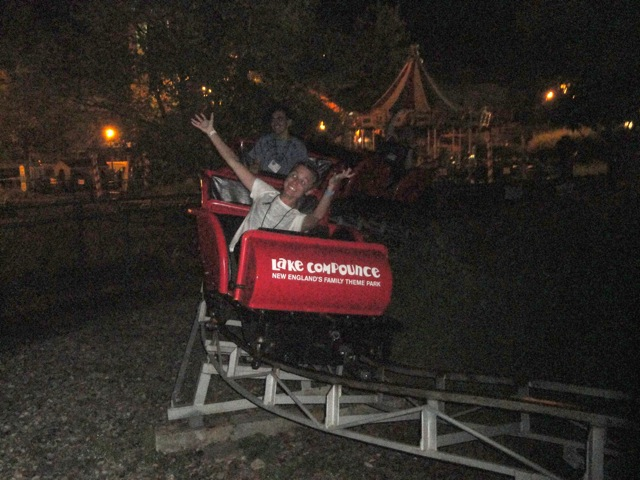

| |
Kiddy Coaster Review

We're here at Lake Compounce, where we'll be reviewing their kiddy coaster. We get in, and we're off. We head up the tiny lifthill that's smaller than me. And yeah. You know the drill. Tiny drop. Little bunny hop, another tiny little bunny hop, around a turn and CHA-CHING!! You got a credit. Now you must pay for this whorishness by riding it 5 more times. Well, actually, you won't. You see, this ride normally requires a child to ride. I only got this credit due to being at a special event with special ERT. So I not only got the privelage of obtaining this credit, but I also didn't have to deal with riding it multiple times and wasting time on it. Just go once, get the credit 30 seconds later, and then run off to Boulderdash!! =)
1/10
Location: Lake Compounce
Opened: 1997
Built by: Molina & Sons
Last Ridden: July 29, 2011
Kiddy Coaster Photos

|